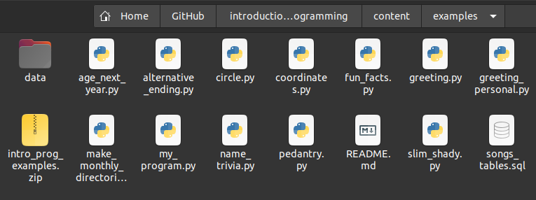

Files¶
Thus far, our programs have interacted with the wider world only via the input() function, for getting information from a human being, and via the print() function, for displaying text results on the screen. By now you will probably be fairly tired of this pattern. Maybe more than once you have run your program, then forgotten that it requires you to type some input into the console, and so spent several minutes idly wondering why nothing is happening. Or you have repeatedly hit the wrong keys on your keyboard by accident and been treated to some infuriating error messages. So you will be glad to hear that we are (mostly) going to leave the input() function behind from now on. We have really mainly been using input() as a crutch, a simple form of interactivity to get us started with programming. Most real programs don’t use input() at all, or only sparingly. Instead, they have other methods for getting hold of external data. The first of these methods that we will learn about is reading in data from a file stored on our computer. We will also learn a bit about how to write the results of our programs into new files.
There are lots of different file formats, each of which stores information in different ways. For example, Microsoft Word docx files store text along with various additional pieces of information about how that text is to be displayed, jpg image files store information about the colors of the pixels of an image, and some files, such as exe files, store entire programs in a form that it is not feasible for a human being to read and interpret. When working with files, we will need to be aware of the nature of the particular file format we are dealing with, and instruct Python to read or write it appropriately.
We will consider here files that store data in the form of text, and come to non-text file formats in later lessons when they become relevant.
Plain text¶
Let’s start with a file format that is fairly easy to deal with: plain text. Plain text files just store text characters (although as we will see, there are some subtleties to consider even here). We can open plain text files and view their contents in a normal text editor.
If you want to follow along with the examples in this lesson, make sure you have first downloaded the example programs and data files for the class and that you have unzipped this file in your working directory so that ‘data’ is a subdirectory of your working directory. Like this:

Now find the example text file melville-moby_dick.txt. The txt extension indicates that this file should contain plain text. It contains the full text of the novel Moby Dick by Herman Melville.
(Note that one of the many profoundly stupid default options in Windows is that file extensions such as .py, .txt, etc. are not displayed, so the file may appear only as melville-moby_dick in your file explorer, but its name is still melville-moby_dick.txt, and this is how Python and other programs will want you to refer to it. See here for how to change this option if you would prefer to be able to see file extensions.)
You can open a plain text file in your preferred text editor. Since the editor in Spyder is just a fancy text editor, you can open it there if you like. This might even be the most convenient way to view it, since you will have it open just next to the Spyder console and will be able to see its contents as you try out the example commands below for opening and reading the file.
Reading¶
Let’s now open the file from within a Python program. There is a built-in function for this, called simply open(). The input argument is a string containing the path to the file we want to open. If the file is located in the same directory as our program, then the path is simply the name of the file. But in this case, the file is located in a directory called ‘data’, so we need to put this together with the file name to build the full path (Take a look back at the use of os.path in the previous lesson if you need to remind yourself how this works).
We should assign the result of calling the open() function into a new variable, so that we can then work with it in the rest of our program. If we are working with just a single file, f is a convenient choice of variable name. We will use that. But note that if we were working with multiple files it would be better for the clarity of our program if we chose a variable name that says something about which particular file we have opened.
import os
filepath = os.path.join('data', 'melville-moby_dick.txt')
print(filepath)
data/melville-moby_dick.txt
f = open(filepath)
Note that if open() cannot find the requested file, it raises a FileNotFoundError, which looks like this:
open('nonexistent_file.txt')
---------------------------------------------------------------------------
FileNotFoundError Traceback (most recent call last)
<ipython-input-4-cc7db0881b62> in <module>
----> 1 open('nonexistent_file.txt')
FileNotFoundError: [Errno 2] No such file or directory: 'nonexistent_file.txt'
If you see this error message, check the following:
Did you first follow the steps for downloading the file?
Have you got the name of the file right?
Is the file in a subdirectory called ‘data’?
Is the ‘data’ subdirectory in your current working directory? (Try
os.getcwd()at the Spyder console to see the path to your current working directory.)Did you use
os.path.join()correctly? (Check the output ofprint(filepath)after theos.path.join()command above.)
So what type does the open() function return?
type(f)
_io.TextIOWrapper
If you were hoping it would just be a string containing the contents of the file, you will be disappointed. As is sometimes the case, an intermediate step lies between us and our seemingly simple goal. First we open the file, then we read in its contents.
type() tells us that open() has returned a TextIOWrapper. The ‘IO’ part stands for Input/Output. This abbreviation is used quite broadly in computing to refer to any process that involves getting or sending information from or to some resource that is external to the computer program, such as a human being, the internet, or a file. The TextIOWrapper is a data type specifically for connecting to text files, then reading from and writing to them.
This entity (which we have now stored in our f variable) is more commonly and more simply referred to as a ‘file object’. A file object has methods for reading and writing, as we can see if we apply the dir() function:
dir(f)
['_CHUNK_SIZE',
'__class__',
'__del__',
'__delattr__',
'__dict__',
'__dir__',
'__doc__',
'__enter__',
'__eq__',
'__exit__',
'__format__',
'__ge__',
'__getattribute__',
'__gt__',
'__hash__',
'__init__',
'__init_subclass__',
'__iter__',
'__le__',
'__lt__',
'__ne__',
'__new__',
'__next__',
'__reduce__',
'__reduce_ex__',
'__repr__',
'__setattr__',
'__sizeof__',
'__str__',
'__subclasshook__',
'_checkClosed',
'_checkReadable',
'_checkSeekable',
'_checkWritable',
'_finalizing',
'buffer',
'close',
'closed',
'detach',
'encoding',
'errors',
'fileno',
'flush',
'isatty',
'line_buffering',
'mode',
'name',
'newlines',
'read',
'readable',
'readline',
'readlines',
'reconfigure',
'seek',
'seekable',
'tell',
'truncate',
'writable',
'write',
'write_through',
'writelines']
The read() method returns the contents of the text file as a string (remember how to use methods).
text = f.read()
type(text)
str
Famously, the opening line of Moby Dick is ‘Call me Ishmael.’ But as we can see from printing out the first few hundred characters, this isn’t quite true:
print(text[:433])
[Moby Dick by Herman Melville 1851]
ETYMOLOGY.
(Supplied by a Late Consumptive Usher to a Grammar School)
The pale Usher--threadbare in coat, heart, body, and brain; I see him
now. He was ever dusting his old lexicons and grammars, with a queer
handkerchief, mockingly embellished with all the gay flags of all the
known nations of the world. He loved to dust his old grammars; it
somehow mildly reminded him of his mortality.
Chapter 1 of the novel proper does begin with the famous opener, but it is preceded by a preamble in which two other narrators, the ‘pale Usher’ and the ‘sub-librarian’ discuss the etymology of the word ‘whale’ and various extracts from other books on the subject of whales. This piece of trivia, along with your Python programming skills, is something that you can seriously impress your friends and colleagues with.
So, now that we have the string text of the novel, we can do all the various things that we know how to do with strings, such as count the number of words, count the occurrences of a particular word, and so on. For example:
target_word = 'whale'
n_occurrences = text.lower().count(target_word)
print(n_occurrences)
1685
If you are unable to rein in your excitement at this point, take a moment to go to the Spyder console and try out lots of fun things with the text of Moby Dick until you have calmed down. Processing and analyzing natural language texts is the topic of a future lesson; for now we will stick to the technical drudgery of handling files.
The first question we may reasonably ask is: Why did we have to first use a function to open the file and get a ‘file object’, and only then read in the contents of the file? If the only thing we want to do with the file is to read in its entire contents, then this intermediate step is indeed superfluous, and we can simplify our program a little by applying the read() method directly to the result of calling the open() function.
The syntax for this perhaps looks a little strange, but has its logic:
text = open(filepath).read()
When all we want to do is to read in the entire contents of a text file, we can stick to this one-liner combination of open() and read(). But when would we not want to read in the entire contents of the file? One such situation is if we want to search in the file until we find something that we are looking for, and then stop. For example, imagine that we want to find the first line in Moby Dick that contains the word ‘whale’.
One way to do this would be to just read in the entire file and then search in the resulting string. We could for example split the entire string into lines, go through them in a loop, then break out of the loop when we find a line containing 'whale'. Like this:
lines = text.splitlines()
for line in lines:
if target_word in line.lower():
break
msg = "The first line containing '{}' is: [...] {}"
print(msg.format(target_word, line))
The first line containing 'whale' is: [...] name a whale-fish is to be called in our tongue leaving out, through
A different way to do this would be to read in the contents of the file only one line at a time, then stop reading when we find the line we are searching for. File objects are iterable. If we loop through a file object, each run of the loop gives us the next line from the file. (Take a look back at the lesson on iteration if you need to remind yourself about iterable types.)
So we could also find the first line containing 'whale' like this:
f = open(filepath)
for line in f:
if target_word in line.lower():
break
print(msg.format(target_word, line))
The first line containing 'whale' is: [...] name a whale-fish is to be called in our tongue leaving out, through
Whether we first read in the entire file and then search in its contents, or whether we read the file line-by-line, the result is the same. The difference behind the scenes is that the former method loads the entire contents of the file into our computer’s temporary memory, whereas the second method only ever holds one line in memory at any one time, and therefore uses less of the computer’s memory. In almost all cases, this difference will not be important, but here are some instances in which it might matter:
The file we are reading is absolutely colossal (multiple squigabytes) and wouldn’t all fit in our computer’s temporary memory at once. In this case we have no choice but to read it in parts.
The file is still very large (a squigabyte or two), so although it can be read in its entirety, the process of doing so slows down our program unacceptably. In this case, reading line-by-line may be faster if the line we are searching for could occur near the beginning of the file.
Writing¶
Next we might ask: Can we write new text to the file? After all, when we dir() the file object, we see a write() method.
Let’s just try it. What’s the worst that could happen (other than accidentally overwriting the entire file and having to download it again)?
f = open(filepath)
f.write('And then I woke up and it was all a dream.')
---------------------------------------------------------------------------
UnsupportedOperation Traceback (most recent call last)
<ipython-input-13-d3350b3ebd2d> in <module>
1 f = open(filepath)
2
----> 3 f.write('And then I woke up and it was all a dream.')
UnsupportedOperation: not writable
We see an error message informing us that our file is not writable. This is in fact fortunate here, as otherwise the result of the write() command above would have been to overwrite the entire contents of the file.
There is an additional keyword argument to open() called mode, which specifies what ‘mode’ we want to open the file in. You can see a list of the possible modes at the Python documentation page for open(), and you will also see there what the default value of mode is.
Above, we used open() without specifying anything for mode, so the default value was applied, and the default value happens to be 'r', meaning ‘read only’. If we instead ask for 'w' mode, we get a writable file object. We won’t do this for the Moby Dick file, since we don’t want to overwrite it. Instead, we will create our own new file and write some text into it. For example:
filename = 'my_new_file.txt'
f = open(filename, mode='w')
f.write('Writing your first text file is a truly exhilarating experience!')
64
If you enter the two commands above into the Spyder console and then you go and look at your working directory, you should see that the new file has appeared there.
However, if you click on the new file to open it in a text editor, you might not see the text that you wrote with the write() method. Depending on some behind-the-scenes details that may occasionally vary, Python does not necessarily write to a file immediately. Writing data to the computer’s permanent memory is by computer standards a slow operation, and can be done more efficiently by waiting until there is plenty to write, then writing everything in one go. So Python waits until we write a lot of data or until we definitely stop writing.
We can signal that we have finished writing by closing the file with the close() method.
f.close()
Now you should be able to open the file in a text editor and see the finished result of any write() commands that you have run.
Or you can also use Python to read in and print the contents of the new file:
print(open(filename).read())
Writing your first text file is a truly exhilarating experience!
The 'w' file mode creates a new blank file for fresh writing. If we call open() in 'w' mode again with the same file name, then the existing content is overwritten with whatever we write this time:
f = open(filename, mode='w')
f.write('Writing your second text file is less exciting.')
f.close()
Notice that when we read the file again for confirmation, the first piece of text that we wrote above has gone:
print(open(filename).read())
Writing your second text file is less exciting.
So we should be careful with 'w' mode if there is a possibility that we will overwrite an important file, for example a great work of literature like Moby Dick. There is a safer mode for such cases, 'x'. This mode is the same as 'w', but if the requested file already exists, open() raises an exception instead of overwriting the existing file:
f = open(filepath, mode='x')
---------------------------------------------------------------------------
FileExistsError Traceback (most recent call last)
<ipython-input-19-6b84d940cf48> in <module>
----> 1 f = open(filepath, mode='x')
FileExistsError: [Errno 17] File exists: 'data/melville-moby_dick.txt'
Appending¶
Both 'w' and 'x' modes create an entirely new file. But what if we want to add to an existing file? There is a file mode for that too. 'a' mode appends new text to the end of an existing text file.
Here is an example, appending to the end of the example file we wrote above:
f = open(filename, mode='a')
f.write('The excitement returns when you discover appending!')
f.close()
print(open(filename).read())
Writing your second text file is less exciting.The excitement returns when you discover appending!
Escape characters¶
Oops. Can you spot the small punctuation mistake that our appending introduced into the file? How would you avoid this?
print('SPOILER ALERT ' * 100)
SPOILER ALERT SPOILER ALERT SPOILER ALERT SPOILER ALERT SPOILER ALERT SPOILER ALERT SPOILER ALERT SPOILER ALERT SPOILER ALERT SPOILER ALERT SPOILER ALERT SPOILER ALERT SPOILER ALERT SPOILER ALERT SPOILER ALERT SPOILER ALERT SPOILER ALERT SPOILER ALERT SPOILER ALERT SPOILER ALERT SPOILER ALERT SPOILER ALERT SPOILER ALERT SPOILER ALERT SPOILER ALERT SPOILER ALERT SPOILER ALERT SPOILER ALERT SPOILER ALERT SPOILER ALERT SPOILER ALERT SPOILER ALERT SPOILER ALERT SPOILER ALERT SPOILER ALERT SPOILER ALERT SPOILER ALERT SPOILER ALERT SPOILER ALERT SPOILER ALERT SPOILER ALERT SPOILER ALERT SPOILER ALERT SPOILER ALERT SPOILER ALERT SPOILER ALERT SPOILER ALERT SPOILER ALERT SPOILER ALERT SPOILER ALERT SPOILER ALERT SPOILER ALERT SPOILER ALERT SPOILER ALERT SPOILER ALERT SPOILER ALERT SPOILER ALERT SPOILER ALERT SPOILER ALERT SPOILER ALERT SPOILER ALERT SPOILER ALERT SPOILER ALERT SPOILER ALERT SPOILER ALERT SPOILER ALERT SPOILER ALERT SPOILER ALERT SPOILER ALERT SPOILER ALERT SPOILER ALERT SPOILER ALERT SPOILER ALERT SPOILER ALERT SPOILER ALERT SPOILER ALERT SPOILER ALERT SPOILER ALERT SPOILER ALERT SPOILER ALERT SPOILER ALERT SPOILER ALERT SPOILER ALERT SPOILER ALERT SPOILER ALERT SPOILER ALERT SPOILER ALERT SPOILER ALERT SPOILER ALERT SPOILER ALERT SPOILER ALERT SPOILER ALERT SPOILER ALERT SPOILER ALERT SPOILER ALERT SPOILER ALERT SPOILER ALERT SPOILER ALERT SPOILER ALERT SPOILER ALERT
That’s right; when we write new text to a file, the writing starts immediately after the end of the existing text. No space or line break is added to separate the newly written text from the existing text. If we want a space or if we want the new text to start on a fresh line, then we need to include the space or line break explicitly.
Let’s append to our file once more, this time using the special newline character combination '\n' to put the appended text on a new line:
f = open(filename, mode='a')
f.write('\nThough the excitement may be dampened if you forget about newlines.')
f.close()
print(open(filename).read())
Writing your second text file is less exciting.The excitement returns when you discover appending!
Though the excitement may be dampened if you forget about newlines.
What is the deal with that newline character combination? We have met it on a few occasions so far.
In Python, and in many other programming languages, the backslash character '\' is used to modify the computer’s interpretation of the subsequent characters. This allows programmers to write certain features into a piece of text that might otherwise be difficult to write literally, such as new lines, tab spaces, accented characters, emojis, and so on. A character that is not interpreted literally but instead modifies the interpretation of subsequent characters is sometimes termed an ‘escape character’.
The character combination '\n' in a string is interpreted as the start of a new line in text. The new line takes effect whenever the string is printed or written to a file. For example:
print('Line1\nLine2\nLine3')
Line1
Line2
Line3
A common pattern in a program is to use a loop to write multiple lines to a file. And a common mistake is to forget the newline character when writing:
shopping = ['eggs', 'bacon', 'black pudding', 'sausages']
f = open(filename, mode='w')
for index, item in enumerate(shopping):
f.write('{}: {}'.format(index, item))
f.close()
print(open(filename).read())
0: eggs1: bacon2: black pudding3: sausages
Here is the example above again but with one small change:
f = open(filename, mode='w')
for index, item in enumerate(shopping):
f.write('{}: {}\n'.format(index, item))
f.close()
print(open(filename).read())
0: eggs
1: bacon
2: black pudding
3: sausages
There are many other special character sequences that Python recognizes, for example the tab space '\t' (i.e. what you get when you press the ‘↹’ key in a word processor), but the newline is really the only one that is useful for common tasks.
Python even provides an option that allows us to avoid using the newline character combination. If we want to create a string that spans multiple lines, we can write the new lines as explicit line breaks, as long as we enclose the string text in triple quotes (""" """). The triple quotes indicate to Python that line breaks inside this string are to be interpreted just as text line breaks, and not for example as the start of a new Python command.
A common use of multi-line strings is to define a format for a neatly printed output:
results_msg = """
****** Shopping summary ******
items : {}
first item : {}
last item : {}
******************************
"""
f = open(filename, mode='w')
f.write(results_msg.format(len(shopping), shopping[0], shopping[-1]))
f.close()
print(open(filename).read())
****** Shopping summary ******
items : 4
first item : eggs
last item : sausages
******************************
Context managers¶
In all of the examples above in which we wrote text to a file, we made sure to close the file using the close() method once we had finished writing. This is a good idea. Behind the scenes, it makes some difference to our computer whether a connection to a file is open or not. An open file connection takes up some of the computer’s available memory, particularly if we are in the process of writing a large amount of text, and this memory may be sorely needed by viruses and malware. In addition, some operating systems set a limit to the number of files that may be open at any one time.
If we are unsure whether the file that a file object represents is closed or not, there is an attribute of the file object, called closed, that tells us. We can access this attribute using the same . notation as for accessing methods (but note no parentheses because closed is not a function, it is just a piece of information):
f = open(filename, mode='w')
f.closed
False
f.close()
f.closed
True
Using close() is fine for basic purposes, but let’s look at one subtle problem that might arise once we start writing more complex programs. What if we write a program that opens a file for writing, does some writing, then closes the file, but then when we run the program it happens to encounter an error in between the opening and closing steps.
Here is a trivial example, in which our program tries to write something that is not a string:
variable_that_we_think_is_a_string_but_is_not = 10
f = open(filename, mode='w')
f.write(variable_that_we_think_is_a_string_but_is_not)
f.close()
---------------------------------------------------------------------------
TypeError Traceback (most recent call last)
<ipython-input-29-c7cb4e663efb> in <module>
2
3 f = open(filename, mode='w')
----> 4 f.write(variable_that_we_think_is_a_string_but_is_not)
5 f.close()
TypeError: write() argument must be str, not int
Now let’s check the final status of the file:
f.closed
False
Remember that errors stop a program from continuing. So the occurrence of an error on line 4 above means that Python does not reach line 5, on which the file is closed.
We have left a file open. This is still not really such a big deal unless our program is part of some other more complex program that needs the resources that our unfinished file is taking up. But as with so many such subtleties, it is a good idea to get into the habit of avoiding this problem if we can.
How do we avoid leaving a file open if an error occurs before it can be closed? Just when you thought that we had learned all the control statements that there could possibly be, here is one more. The with and as keywords start a control statement that says to Python ‘do the following with this variable under this name, and then clean up once you have finished whether you finish as planned or you finish because you encountered an error’. The English-language instruction is quite a mouthful, but the Python control statement for this is more succinct. Here it is, applied to our example above:
with open(filename, mode='w') as f:
f.write(variable_that_we_think_is_a_string_but_is_not)
---------------------------------------------------------------------------
TypeError Traceback (most recent call last)
<ipython-input-31-33ad52407139> in <module>
1 with open(filename, mode='w') as f:
----> 2 f.write(variable_that_we_think_is_a_string_but_is_not)
TypeError: write() argument must be str, not int
The error occurs as before, but now if we check the status of the file, it has been closed despite the error:
f.closed
True
And note that the file is also closed after the end of the with section in the case that the requested actions succeed without producing an error:
with open(filename, mode='w') as f:
f.write('Hello my name is Mildred.')
f.closed
True
print(open(filename).read())
Hello my name is Mildred.
Take a look at the example ‘with statements’ above. We are by now familiar with the general syntax of control statements. As usual, we have a statement containing keywords and ending in a colon, and there is indentation to mark which lines belong to the control statement, in this case just the single line applying the write() method to the file object.
The nature of the control statement in this case is to make the indented block of commands into a ‘context’ for a variable. Following the with keyword is a call to the function that creates the variable (in this case the open() function). Then the as keyword just gives the variable a name (in this case we have chosen f). This variable name can then use in the indented block of commands.
The with statement then takes care of any ‘cleaning up’ that needs to be done with the variable once we have finished with it. In this case the cleaning up includes closing the file. We indicate that we have finished with the variable in the same way that we indicate the end of other control statements: we stop indenting.
Special methods again¶
An astute question to ask at this point is: How does Python know what cleaning up steps need to be carried out? After all, nowhere in the examples above do we write something like ‘And once the with part has finished, please run the command f.close()’.
If you were wondering this, then you may congratulate yourself on having asked an astute question.
The answer is that behind the scenes, the type of the variable that is created in the with statement determines what cleaning up it does when the statement ends. Python looks at the variable and runs one of its hidden ‘special methods’. Remember what we learned about these special methods back in the lesson on modules. They are methods that are not intended to be used directly, but that determine a type’s behavior in different situations.
Let’s look again at what methods a file object has, this time taking a look at the special methods enclosed in double underscores __ __. We can use the Moby Dick file again:
f = open(filepath)
dir(f)
['_CHUNK_SIZE',
'__class__',
'__del__',
'__delattr__',
'__dict__',
'__dir__',
'__doc__',
'__enter__',
'__eq__',
'__exit__',
'__format__',
'__ge__',
'__getattribute__',
'__gt__',
'__hash__',
'__init__',
'__init_subclass__',
'__iter__',
'__le__',
'__lt__',
'__ne__',
'__new__',
'__next__',
'__reduce__',
'__reduce_ex__',
'__repr__',
'__setattr__',
'__sizeof__',
'__str__',
'__subclasshook__',
'_checkClosed',
'_checkReadable',
'_checkSeekable',
'_checkWritable',
'_finalizing',
'buffer',
'close',
'closed',
'detach',
'encoding',
'errors',
'fileno',
'flush',
'isatty',
'line_buffering',
'mode',
'name',
'newlines',
'read',
'readable',
'readline',
'readlines',
'reconfigure',
'seek',
'seekable',
'tell',
'truncate',
'writable',
'write',
'write_through',
'writelines']
The two special methods that determine a type’s behavior in a with statement are __enter__() and __exit__(). Any type that has these two methods can be used in a with statement. As you can probably guess, the __enter__() method is called when the with statement begins (we ‘enter’ the ‘context’), and the __exit__() method is called when the block of indented commands following with has finished (we ‘exit’ the ‘context’). And as you can probably also guess, the __exit__() method for a file object includes a command to close the file.
Any variable type that has __enter__() and __exit__() methods can be used in a with statement. In the terminology, we say that it can be used as a ‘context manager’.
So the next astute question that might occur to you is: ‘Apart from file objects, are there any other types that can be used in a with statement?’ There are, but they are much less commonly used for general programming tasks.
For now, if the last few paragraphs seemed a little abstract to you, the take-home message is that it is a good habit to use with statements for writing to files. This ensures that the file is closed once you have finished, whatever happens.
Encodings¶
We are not done with text files yet. Before we move on to consider a few special kinds of text file, we need to learn about something that is a little tedious but is very important: File encodings. Not knowing about file encodings can be the source of a great deal of frustration when working with text data. To understand what file encodings are, we need to take a very brief aside to consider a tiny bit of the history of computing.
As you are probably aware, a computer does not actually just store text characters as characters the way they appear on the screen. Computers have no built-in concept of letters or characters and they do not somehow ‘draw’ the letters anywhere in their memory. Instead, computers store everything as numbers. (Even this is something of a simplification; computers store sequences of signals that are either ‘on’ or ‘off’, and intermediate systems can interpret combinations of these signals as numbers. But this is more detail than we need for now.) So in order to store text, a computer needs some way of translating each text character into a unique number. A system for translating text characters into numbers is known as a text encoding, because it turns text into a computer ‘code’.
Translating text characters back and forth into numbers for our computer each time we write or read text data should be no problem, so long as it is always clear which numbers stand for which characters, in other words, which encoding we should use. When reading a text file, we just need to make sure to read it using the same encoding as was used to write it.
ASCII¶
Fortunately, a standard encoding was agreed upon in the early days of computerized data exchange, so that everybody could save their bawdy jokes to a magnetic tape or floppy disk and mail it to their friends, sure in the knowledge that other computers would translate the computer code into text correctly. This standard encoding is commonly known as the American Standard Code for Information Interchange, or ASCII.
However, ASCII only specified a system for the characters that Americans most like to use. These included just the 26 letters of the English version of the Latin alphabet (their lowercase and uppercase versions), along with digits, some punctuation, a few special characters like the newline that we learned about above, and the cheeseburger emoji.
If we are reading or writing text files that we are sure contain only the characters defined in ASCII, then we do not usually need to worry about the file encoding; computers will tend to agree on how to read and write such text files without being given any additional instructions about encoding.
UTF-8¶
ASCII is a bit restrictive when it comes to handling text in general. It doesn’t even include accented characters, and even in an English-language text we might occasionally want to use these, for example if we are being pretentious and slipping in a few French phrases like trompe-l’œil or ouh là là, or writing about someone with a non-English name, like the singer Michael Bublé.
Unfortunately, there is no universal system agreed upon for encoding the characters that are not covered by ASCII. As computers became more common outside the English-speaking world, each group of users that wanted to exchange text containing non-English characters went ahead and developed their own encodings. The result is that today there are various different ways of storing text on a computer if that text contains non-ASCII characters.
There has since been some movement towards standardization, but it is incomplete. The in-theory most widely agreed-upon encoding for non-ASCII characters is an encoding called UTF-8 (8-bit Unicode Transformation Format) and this is by far the most commonly used encoding for web pages. However, some of the most popular operating systems, Windows and macOS, do not use UTF-8 by default when reading or writing text files. Instead, they use a variety of other encodings.
Locales¶
How does Python know which encoding to use when we read and write text files? As you may have noticed when we looked at the Python documentation page for open(), there is an encoding argument to the open() function. We can use this to ensure that open() uses a particular encoding when reading or writing a file. But in the examples above we didn’t enter anything for the encoding argument. So what encoding did open() use by default? It uses whatever the computer’s operating system says is the current user’s preferred encoding.
You might not be aware that you have a preferred encoding, but your computer will almost certainly have chosen one for you when you set your preferred language. Your computer stores this and other preferences concerning language and location together in a bundle of information often termed your locale. Your user locale usually contains information about your time zone, language, and so on, and various programs may make use of the information in your locale to customize your user experience.
The locale module from Python’s standard library allows you to access this information from within a Python program. The getpreferredencoding() function will tell you what encoding your computer thinks you prefer:
import locale
locale.getpreferredencoding()
'UTF-8'
As you can see from the output above, the locale for my user account includes a preference for UTF-8 encoding. But if you enter the two commands above into your Spyder console, you may get a different answer.
When I ran the examples for reading and writing text files above, I was implicitly using UTF-8 encoding. If you ran some of the examples yourself on your own computer, Python may have been using a different encoding behind the scenes. This is very unlikely to have made any practical difference. As we noted a moment ago, for the limited set of characters defined in ASCII, all commonly-used encodings agree on how they should be stored. All of the examples above used only ASCII characters (the Moby Dick file also contains only ASCII characters).
But let’s now see some examples in which encoding is important. We will try to read a text file that contains some French and German accented letters, which are not among those defined in ASCII. This file contains someone’s five favorite bands.
filepath = os.path.join('data', 'top_5_bands_LATIN1.txt')
open(filepath).read()
---------------------------------------------------------------------------
UnicodeDecodeError Traceback (most recent call last)
<ipython-input-37-2db62b47f006> in <module>
1 filepath = os.path.join('data', 'top_5_bands_LATIN1.txt')
2
----> 3 open(filepath).read()
/usr/lib/python3.8/codecs.py in decode(self, input, final)
320 # decode input (taking the buffer into account)
321 data = self.buffer + input
--> 322 (result, consumed) = self._buffer_decode(data, self.errors, final)
323 # keep undecoded input until the next call
324 self.buffer = data[consumed:]
UnicodeDecodeError: 'utf-8' codec can't decode byte 0xd6 in position 5: invalid continuation byte
I get an error message telling me that the file could not be decoded using UTF-8. Curiously, if you are using a Windows computer you might not see the same error message if you try the above two lines. You might just see the correct contents of the file. This is because this particular file was not written using UTF-8 but using another encoding that is compatible with the default encoding on English-language Windows. The encoding that was used to write this file goes by various names but is often called ‘latin-1’.
If I want to read this file correctly, then I must specify this encoding:
bands = open(filepath, encoding='latin-1').read()
print(bands)
Blue Öyster Cult
Die Ärzte
Héroes del Silencio
Michael Bublé
Motörhead
The ‘latin-1’ encoding and others similar to it are widely used in Western Europe and the Americas because they define codes for most of the accented characters that appear in Western European languages. They do not, however, define codes for characters from other alphabets.
Note that the result of using the wrong encoding is not always an error. If the file contains numbers that mean one thing for one encoding, and are still valid but have a different meaning for another encoding, then some parts of the text will simply be substituted with the wrong characters.
This happens, for example, if we try to read a UTF-8 encoded version of the top 5 bands file using the ‘latin-1’ encoding:
filepath = os.path.join('data', 'top_5_bands_UTF8.txt')
bands = open(filepath, encoding='latin-1').read()
print(bands)
Blue Ãyster Cult
Die Ãrzte
Héroes del Silencio
Michael Bublé
Motörhead
You can see here that relying on the locale to choose the encoding when we read a file is not a good idea, at least if we are reading a file that contains (or might contain) non-ASCII characters. Our program might read a file entirely correctly on our computer, but fail to do so on a colleague’s computer, either giving them an error, or worse, happily reading in the file as gibberish. So if our program includes text data files it is a good idea to explicitly specify the file encoding when we use open() to read them. This ensures that our program is reproducible for others.
What about writing files? For writing, too, Python will use the locale’s preferred encoding. So you should be aware that if you write non-ASCII characters to a text file without specifying an encoding then you may be writing them using an encoding that is different from the one that someone else’s computer will try to use to read that file. If you write any non-ASCII characters then you should specify the encoding when you use open() to create the file, so that you can be sure of what you are getting.
If you are unsure which encoding you should use for writing files, UTF-8 is generally a good choice. It is considered a basic standard for the internet, and it defines codes for characters in more or less every writing system in the world, including for emojis.
For example, you can use UTF-8 to encode Arabic characters:
msg = 'اسمي ميلدريد'
file_encoding = 'utf-8'
with open(filename, mode='w', encoding=file_encoding) as f:
f.write(msg)
open(filename, encoding=file_encoding).read()
'اسمي ميلدريد'
Which you cannot do at all with some other encoding systems:
file_encoding = 'latin-1'
with open(filename, mode='w', encoding=file_encoding) as f:
f.write(msg)
---------------------------------------------------------------------------
UnicodeEncodeError Traceback (most recent call last)
<ipython-input-41-951ff0eca922> in <module>
2
3 with open(filename, mode='w', encoding=file_encoding) as f:
----> 4 f.write(msg)
UnicodeEncodeError: 'latin-1' codec can't encode characters in position 0-3: ordinal not in range(256)
The only important omission from UTF-8’s set of defined characters is the symbol for the artist formerly known as Prince.
filepath = os.path.join('data', 'top_10_bands.txt')
bands = open(filepath, encoding='utf-8').read()
print(bands)
Blue Öyster Cult
Die Ärzte
Héroes del Silencio
Mate Matišić
Michael Bublé
Motörhead
Я́нка
سيد خليفة
林憶蓮
The Artist Formerly Known as Prince
That covers the essentials for working with text files. If you would like to see them in action in an example program, you can take a look at alternative_ending.py.
To finish, we will look at a couple of special text file formats. These are still just text files, but they store text in a structured way.
Delimited text¶
A common arrangement for structured data is as a table. A table has rows, each of which represents one ‘observation’, which might be a customer, a purchase, a trial in an experiment, etc., and it has columns, each of which records one piece of information about that observation, such as a name, a price, a physical measurement, etc. The columns typically, but not always, have names that indicate what piece of information is recorded in the column. In everyday office work, we typically work with tables via a spreadsheet program such as Microsoft Excel.
Because of their simple structure, tables can be represented in plain text. The rows of the table can be written simply as lines in a text file. The only slightly tricky question is how to deal with the columns. A typical solution is to reserve one character as a separator to mark the division between columns on each row. An alternative term for ‘separator’ is ‘delimiter’, so such files are sometimes called ‘delimited text’ files.
What a delimited text file looks like in practice is easiest to see by means of an example. So let’s read one in. The file penguins.csv contains a table in the form of delimited text, recording the heart rates of penguins during dives of varying depth and duration.
We can use the readline() method of the file object to read just the first few lines, since it is a fairly long file.
filepath = os.path.join('data', 'penguins.csv')
with open(filepath) as f:
for linenum in range(6):
print(f.readline(), end='')
Bird,HeartRate,Depth,Duration
EP19,88.8,5,1.05
EP19,103.4,9,1.1833333
EP19,97.4,22,1.9166667
EP19,85.3,25.5,3.4666667
EP19,60.6,30.5,7.0833333
The separator (or delimiter) character for this file is the comma. It is for this reason that the file extension is csv, which stands for ‘comma separated values’.
In its raw text form, the table of data is a little difficult to discern. The file has named columns, and the column names are given in the first line, with the comma separator between them. Each subsequent line contains a row of values for each column, also separated by commas. So for example the first row of data records that bird ‘EP19’ had a heart rate of 88.8 beats per minute on a dive that went to 5 meters and lasted 1.05 minutes.
It is important to note that there is nothing special about this format for Python. When we read in a delimited text file, all that Python sees is text. But other programs may interpret delimited text files as tables. For example, if you try to open penguins.csv in Microsoft Excel or another spreadsheet program on your computer, then you might see the rows and columns neatly arranged in the resulting spreadsheet. Possibly, the spreadsheet program may ask you first to specify what separator is used in the file, like this:

Locales again¶
If the default language on your computer is not English, you might not see the table displayed correctly if you try to open it with your spreadsheet program. This is because some languages use the comma as the decimal separator for non-whole numbers (for example 1,618 instead of 1.618), and therefore need to use some other character as a separator for delimited text files. The alternative column separator in this case is usually the semicolon ( ; ).
If you didn’t see the table displayed correctly when you opened penguins.csv in your spreadsheet program, you can try penguins_DE.csv and see whether that works for you. This file contains the same table, but with a semicolon as the column separator and the comma as the decimal separator:
filepath = os.path.join('data', 'penguins_DE.csv')
with open(filepath) as f:
for linenum in range(6):
print(f.readline(), end='')
Bird;HeartRate;Depth;Duration
EP19;88,8;5;1,05
EP19;103,4;9;1,1833333
EP19;97,4;22;1,9166667
EP19;85,3;25,5;3,4666667
EP19;60,6;30,5;7,0833333
The fact that your spreadsheet program opens one or other of these two file formats correctly by default is another example of your locale determining the default behavior of programs. If you create or edit delimited text files using your spreadsheet program, or if you need to open a file that someone else has sent you, you should be aware that you may be reading or writing the file in a different format from that used by your colleagues. If in doubt, open the file in a plain text editor first, to see what the literal text contents look like.
pandas¶
We could process comma-separated tables using basic Python string methods, but this would be tedious. There are instead additional packages for Python that provide functions for reading delimited text files as tables of data. The most popular of these is a package called pandas. pandas is a third-party package; it is not part of the Python standard library. But it is very widely used, and it is provided as part of the Anaconda Python installation, so if you installed Anaconda then you already have pandas.
The pandas function read_csv() reads a comma-separated file, but instead of just reading it as plain text it interprets the structure of the file to produce a table of data (pandas calls a table of data a ‘dataframe’).
import pandas
filepath = os.path.join('data', 'penguins.csv')
penguins_data = pandas.read_csv(filepath)
type(penguins_data)
pandas.core.frame.DataFrame
print(penguins_data)
Bird HeartRate Depth Duration
0 EP19 88.8 5.0 1.050000
1 EP19 103.4 9.0 1.183333
2 EP19 97.4 22.0 1.916667
3 EP19 85.3 25.5 3.466667
4 EP19 60.6 30.5 7.083333
.. ... ... ... ...
120 EP3901 48.4 170.0 11.533333
121 EP3901 50.8 37.0 8.216667
122 EP3901 49.6 160.0 11.300000
123 EP3901 56.4 180.0 10.283333
124 EP3901 55.2 170.0 10.366667
[125 rows x 4 columns]
The read_csv() function has an argument called sep, which allows us to specify what character is used as the separator. If we look at the documentation we see that the default value for sep is ','.
There is also an argument called decimal, for specifying the decimal separator. Its default is '.'.
If we want to read a delimited text file with a semicolon separator, we can specify the appropriate characters for these two arguments:
filepath = os.path.join('data', 'penguins_DE.csv')
penguins_data = pandas.read_csv(filepath, sep=';', decimal=',')
print(penguins_data)
Bird HeartRate Depth Duration
0 EP19 88.8 5.0 1.050000
1 EP19 103.4 9.0 1.183333
2 EP19 97.4 22.0 1.916667
3 EP19 85.3 25.5 3.466667
4 EP19 60.6 30.5 7.083333
.. ... ... ... ...
120 EP3901 48.4 170.0 11.533333
121 EP3901 50.8 37.0 8.216667
122 EP3901 49.6 160.0 11.300000
123 EP3901 56.4 180.0 10.283333
124 EP3901 55.2 170.0 10.366667
[125 rows x 4 columns]
As well as just providing a neater display format, pandas’ interpretation of delimited text files as tables allows us to analyze and manipulate the data more easily than as raw text. For example, the pandas.DataFrame has a method describe() for producing a statistical summary of the data:
print(penguins_data.describe())
HeartRate Depth Duration
count 125.000000 125.00000 125.000000
mean 56.924000 56.79936 7.311231
std 26.343033 47.75013 4.074564
min 22.800000 5.00000 1.050000
25% 36.300000 30.56000 3.299983
50% 48.400000 40.87000 8.100000
75% 76.600000 56.15000 10.500000
max 134.000000 225.00000 18.150000
And it allows us to select columns using a list of column names as an index (Note the double square parentheses, one set for indexing, and one set to indicate that the indices take the form of a list):
print(penguins_data[['Depth', 'Duration']])
Depth Duration
0 5.0 1.050000
1 9.0 1.183333
2 22.0 1.916667
3 25.5 3.466667
4 30.5 7.083333
.. ... ...
120 170.0 11.533333
121 37.0 8.216667
122 160.0 11.300000
123 180.0 10.283333
124 170.0 10.366667
[125 rows x 2 columns]
We will set pandas aside for now, but we will come back to it in more detail when we learn about using Python for data analysis.
JSON¶
Let’s take a look at a text file that has a very different structure. The file guardian_taramasalata.json contains information on 10 articles published on the Guardian online that mention the Greek dish taramasalata. The first few lines of the data look like this:
filepath = os.path.join('data', 'guardian_taramasalata.json')
with open(filepath) as f:
for linenum in range(27):
print(f.readline(), end='')
{
"response": {
"status": "ok",
"userTier": "developer",
"total": 140,
"startIndex": 1,
"pageSize": 10,
"currentPage": 1,
"pages": 14,
"orderBy": "relevance",
"results": [
{
"id": "food/2019/nov/30/scallop-roe-alternative-use-taramasalata-recipe-waste-not-tom-hunt",
"type": "article",
"sectionId": "food",
"sectionName": "Food",
"webPublicationDate": "2019-11-30T06:00:28Z",
"webTitle": "An alternative use for scallop roe",
"webUrl": "https://www.theguardian.com/food/2019/nov/30/scallop-roe-alternative-use-taramasalata-recipe-waste-not-tom-hunt",
"apiUrl": "https://content.guardianapis.com/food/2019/nov/30/scallop-roe-alternative-use-taramasalata-recipe-waste-not-tom-hunt",
"fields": {
"headline": "An alternative use for scallop roe",
"standfirst": "<p>Diver-caught scallops are fresher, less environmentally harmful, and include the best bit many fishmongers leave out, the roe</p>",
"trailText": "Diver-caught scallops are fresher, less environmentally harmful, and include the best bit many fishmongers leave out, the roe",
"byline": "Tom Hunt",
"main": "<figure class=\"element element-image\" data-media-id=\"8cf85b4edc5cb600a3585166df4831306f2e7d33\"> <img src=\"https://media.guim.co.uk/8cf85b4edc5cb600a3585166df4831306f2e7d33/971_0_3648_3648/1000.jpg\" alt=\"Tom Hunt\u2019s scallop roe taramasalata.\" width=\"1000\" height=\"1000\" class=\"gu-image\" /> <figcaption> <span class=\"element-image__caption\">Tom Hunt\u2019s scallop roe taramasalata.</span> <span class=\"element-image__credit\">Photograph: Tom Hunt/The Guardian</span> </figcaption> </figure>",
"body": "<p>Cream-coloured scallops with their bright coral roes are an exquisite treat to be savoured in their entirety. Some fishmongers sell them shelled and without the roe, but if possible avoid buying these, because not only are they missing the best bit, they\u2019re likely dredged, too, which ploughs up the sea bed. Diver-caught scallops may be pricey, but they are picked selectively by hand, so preserving other oceanic species and avoiding unnecessary waste. They\u2019re usually sold live in the shell, too, so you know they\u2019re fresh. </p> <p>Ignore daft recipes that call for only the meaty, white flesh and add the roe anyway \u2013 it won\u2019t affect the dish. Even the frill is edible, incidentally, and is delicious minced and fried. If you do, however, find yourself with roes to use up, whip up this smoky tarama.</p> <h2>Scallop roe taramasalata</h2> <p>If you like seafood and mayonnaise, this is the recipe for you. Homemade taramasalata is an entirely different beast from the ultra-processed, pink gloop you find in supermarkets. Smoked roes are blended with oil in a similar way to mayonnaise, making a fresh and powerful, umami-flavoured dip. A fishmonger might even sell you roes separately, though I\u2019d recommend using the whole scallop.</p> <p><strong>50g scallop roes or whole scallops</strong> (diver-caught, ideally)<br><strong>1 tsp fine sea salt<br>1 tsp tea leaves<br>30g slice stale wholemeal bread</strong>, cut into cubes<br><strong>1 dash </strong><strong>whole milk<br>1 small garlic clove</strong>, peeled<br><strong>50-80ml extra-virgin olive oil<br>\u00bc unwaxed lemon</strong>, zested and juiced<br><strong>\u00bd tsp smoked paprika</strong></p> <p>Salt the scallop roes (or scallops) with a teaspoon of fine sea salt, leave for 15 minutes, then rinse and pat dry. Put the tea leaves in an old saucepan, put a metal sieve on top, pop in the scallop and cover with a lid. Place on a medium heat and, once you see smoke, leave cook for three minutes. Turn off the heat and leave until the smoke stops.</p> <p>To make the taramasalata, soak the bread in a dash of milk until it softens, squeeze out any excess milk, then put the bread in a small blender with the smoked scallop, garlic, 50ml of the oil and the lemon zest and juice. Blend smooth, then check the consistency; add more oil to make it thicker, if necessary. Serve with toast or crudit\u00e9s, and keep in the fridge for up to five days.</p>",
These data too look rather messy when read as raw text. The structure of the text is not as simple as in the delimited text files, but aspects of it may look familiar.
For example, notice that the text file begins with an opening ‘curly brace’ ( { ), the same as is used in Python for creating a dictionary. The similarity to the dictionary syntax continues, with what look like pairs of keys and their associated values separated by the colon character ( : ). Further down the file we can also see an opening square parenthesis, as if to create a list.
This file stores information in the form of nested lists and dictionaries that contain strings and numbers, using the same syntax as in a Python program. This format is known as JSON, which stands for JavaScript Object Notation. As the name suggests, this file format was inspired by the JavaScript programming language, but this language uses a syntax for basic data types that is essentially the same as Python’s, and is similar to that of many other programming languages.
Reading¶
Like the delimited text format, there is nothing special for Python about the JSON format when we read it as plain text, but if we instruct Python to read it as JSON instead of just as text, then we can interact with the data that it contains much more easily.
There is a module in the Python standard library for reading JSON files. It provides a load() function for loading JSON data. This function requires a file object as its first argument, so we must first open the file with open() as usual.
import json
guardian_data = json.load(open(filepath))
type(guardian_data)
dict
We get a dictionary. We won’t always get a dictionary from loading a JSON file. The reason we get a dictionary in this case is because, as we saw above, the file begins with an opening curly brace, which is the syntax for creating a dictionary. If a JSON file begins with an opening square parenthesis, then we will get a list instead.
Now that we have loaded the JSON data, we can interact with it just as with a normal dictionary. For example we can see what keys it contains:
guardian_data.keys()
dict_keys(['response'])
It contains just a single key. Let’s see what value this key contains:
response = guardian_data['response']
type(response)
dict
response.keys()
dict_keys(['status', 'userTier', 'total', 'startIndex', 'pageSize', 'currentPage', 'pages', 'orderBy', 'results'])
It contains yet another dictionary, which contains a key called 'results', which sounds promising.
results = response['results']
type(results)
list
len(results)
10
It is here that we find the list of the 10 Guardian articles that have been published on the subject of taramasalata. As it turns out, each of these contains a further dictionary with various keys storing information about the article, such as the title, publication date, etc.
results[0].keys()
dict_keys(['id', 'type', 'sectionId', 'sectionName', 'webPublicationDate', 'webTitle', 'webUrl', 'apiUrl', 'fields', 'isHosted', 'pillarId', 'pillarName'])
This sort of multiply nested structure is common for data obtained by querying a database via the internet.
Writing¶
We can of course also write data from our program to a JSON file. If we have nested data, such as a list of dictionaries or dictionary of lists, that cannot easily be represented in a table, then we can save our data to a JSON file.
Somewhat unintuitively, the function for writing data to a JSON file is not called save() or write() but dump(), as if our program is rather unceremoniously taking a ‘data dump’. The first argument to json.dump() is the Python variable that we want to store, and the second is the file object to store it to.
Here is a simple example:
todos = {'shopping':['eggs', 'bacon', 'black pudding'],
'chores':['washing up', 'polish silver'],
'reading':['Moby Dick', 'The Hound of the Baskervilles', 'Python for Everybody']}
filename = 'my_new_json_file.json'
json.dump(todos, open(filename, mode='w'))
print(open(filename).read())
{"shopping": ["eggs", "bacon", "black pudding"], "chores": ["washing up", "polish silver"], "reading": ["Moby Dick", "The Hound of the Baskervilles", "Python for Everybody"]}
By default, json.dump() writes the data all on one single line. This is the most compact option and will result in the file taking up the least space. But if we want to be able to view the JSON file in a text editor, it is difficult to read one long line. The additional indent argument to json.dump() can be used to write each item of the lists and dictionaries on a new line indented with a certain number of spaces, so that they are more clearly distinguishable.
json.dump(todos, open(filename, mode='w'), indent=2)
print(open(filename).read())
{
"shopping": [
"eggs",
"bacon",
"black pudding"
],
"chores": [
"washing up",
"polish silver"
],
"reading": [
"Moby Dick",
"The Hound of the Baskervilles",
"Python for Everybody"
]
}
The extra spaces mean that the file takes up slightly more space, but this is only usually a concern for really huge collections of data.
That’s it for JSON, and for text files in general. Try some exercises.
Exercises¶
1¶
Write a short program to convert the latin-1-encoded file top_5_bands_LATIN1.txt into a UTF-8 encoded version. This means that you will need to read the file using one encoding, but then write the contents out to a new file using a different encoding. Write the UTF-8 version to a new file so that you don’t overwrite the original.
At the bottom of your program file include a short test that checks whether the program has worked. It will need to read in the new file using the UTF-8 encoding and print out the contents as a check that they are displayed correctly.
2¶
As is common for data obtained from the internet, the JSON file guardian_taramasalata.json has a fairly complex nested structure. Imagine that we are interested only in the actual text of the 10 Guardian articles contained in the file. Write a program that loads the data from the original file, gets just the 'bodyText' of each article, puts these texts into a list, and then saves the list to a new JSON file.
You will need to explore the structure of the original file first, using the dictionary method keys() repeatedly to see what is in each part of the file.